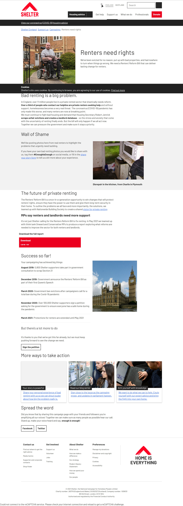
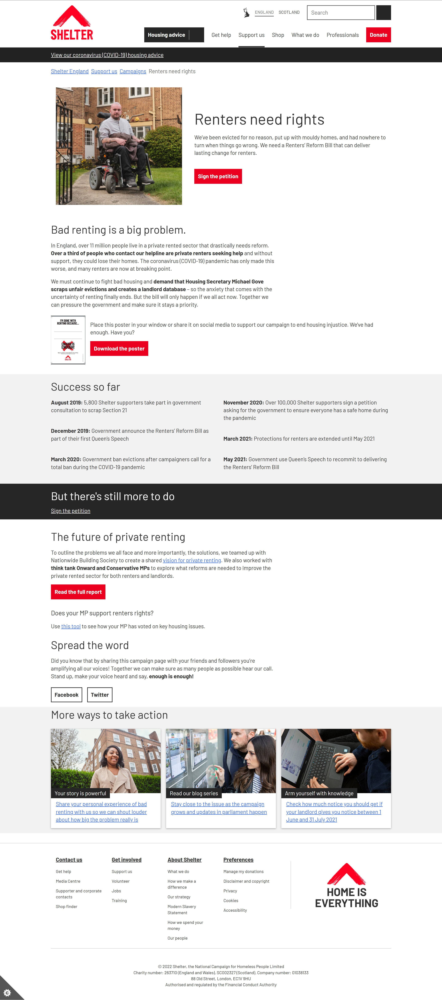

Creating content governance to drive a campaign
The impact
The situation
Shelter's Renters Reform Bill campaign page was one of the charity's top priorities, but it read like it said what the organisation wanted said, not what supporters needed to know. Updates and information were scattered, so engagement relied on social spend and high-effort marketing.
Action taken
Discovery work with existing supporters and people new to the campaign showed exactly what both audiences wanted: a campaign timeline, key wins and clear campaigning objectives.
These insights led to a content strategy that turned the current page into a "hub", built to grow with the campaign and support future assets. The content was designed to give supporters clear answers to what they came for, and stakeholders a structure for what to say and where. It also gave the campaign a clearer user flow, connecting the page to everything running alongside it such as petitions to take action, and relevant Shelter support pages.
The result
The hub drove a 55% increase in traffic and a 40% increase in petition signatures, carrying the campaign to its goal and helping deliver real change in Parliament.
The campaign page over time




Does your content give your audience what they need?
Talk to me about your content strategy